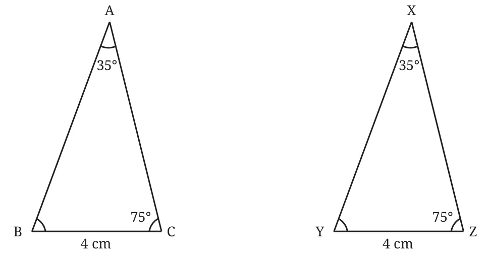
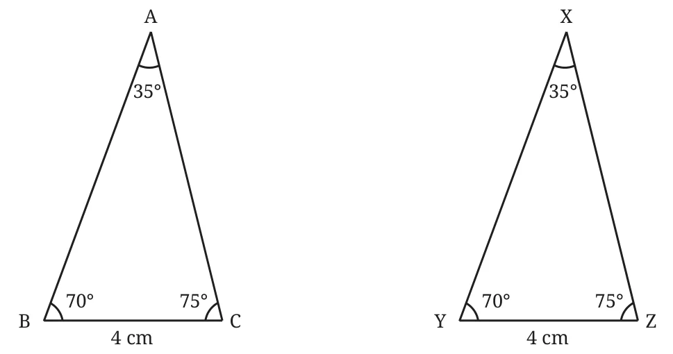

The following triangles \(\triangle ABC\) and \(\triangle XYZ\) are such that \(\angle A = \angle X = 35^{\circ}\), \(\angle C = \angle Z = 75^{\circ}\), and \(BC = YZ = 4\) cm. Are the triangles congruent? Give a reason.

How do we proceed with this problem? Here is a method.
What are the measures of \(\angle B\) and \(\angle Y\)?
We know that the sum of the angles of a triangle is \(180^{\circ}\).
So \(\angle B + 35^{\circ} + 75^{\circ} = 180^{\circ}\),
or \(\angle B + 110^{\circ} = 180^{\circ}\)
Thus, \(\angle B = 70^{\circ}\).
Similarly, \(\angle Y\) is also \(70^{\circ}\).
Thus, we have \(\angle B = \angle Y\).
Does this help in showing that \(\triangle ABC\) and \(\triangle XYZ\) are congruent?

These two triangles now satisfy the ASA condition with
\(\angle B = \angle Y\)
\(BC = YZ\)
\(\angle C = \angle Z\)
So, \(\triangle ABC \cong \triangle XYZ\).
In Fig. 1.2, the equalities are between two angles and the non-included side of the two triangles. This condition is referred to as the AAS (Angle Angle Side) condition. As we have seen, the AAS condition guarantees congruence.
We have seen that the SSA condition doesn’t always guarantee congruence. However, there are some special cases when SSA does guarantee congruence. Here is one such important case.